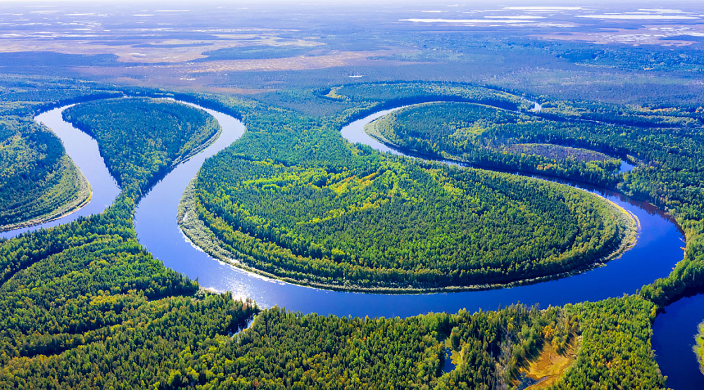
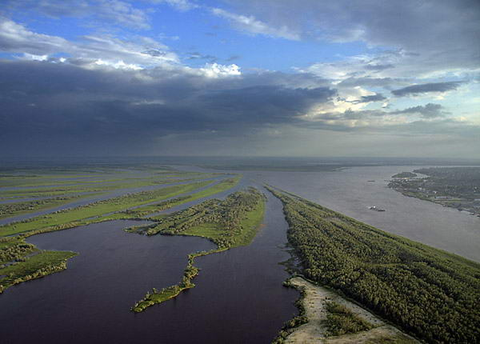
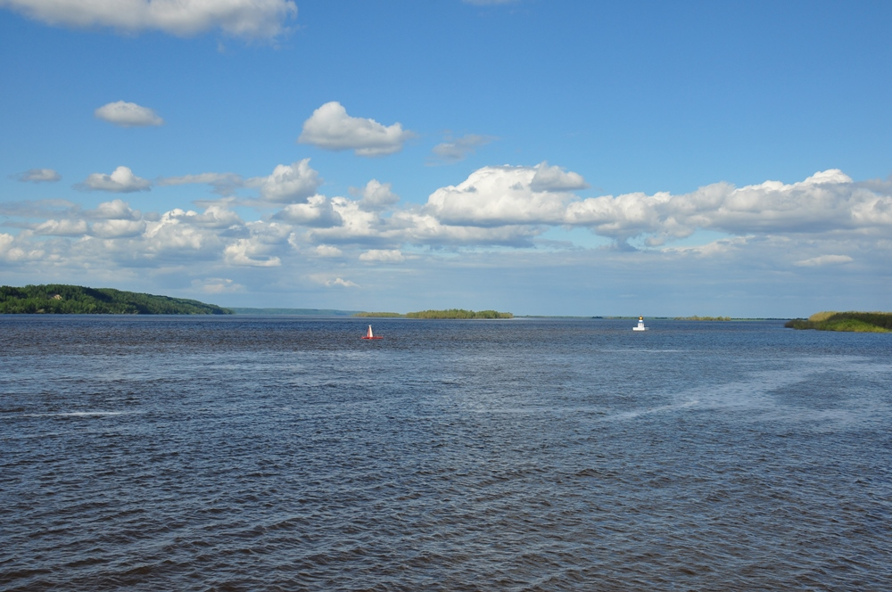
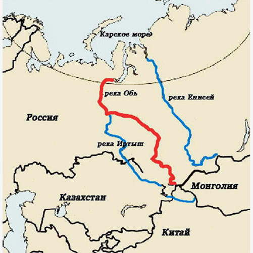

Обь с Иртышом
Главная страница


Иртыш — река в Китае , Казахстане и России, левый, главный приток Оби. Длина Иртыша составляет 4248 км, что превышает длину самой Оби на 598 км (она 3650 км). Иртыш вместе с Обью — самый протяжённый водоток в России, третий по протяжённости в Азии и шестой в мире (5410 км). Годовой сток равен 94,6 км³. Иртыш — самая длинная река-приток в мире (на втором месте — Миссури). Площадь бассейна — 1643 тыс. км². Русло извилистое и неустойчивое, многорукавное. Ширина долины от 5 до 19 км.
Истоки Иртыша находятся на границе Монголии и Синьцзян-Уйгурского автономного района Китая, на восточных склонах хребта Монгольский Алтай. Из Китая под названием Чёрный Иртыш, Эрцисыхэ[6] он попадает в Казахстан, проходит через Зайсанскую котловину, впадает в проточное озеро Зайсан. В устье Чёрного Иртыша находится большая дельта. В Зайсан впадает множество рек с Рудного Алтая, хребтов Тарбагатай и Саур. Многократно усиленный этими водами Иртыш вытекает из озера Зайсан на северо-запад через Бухтарминскую ГЭС, город Серебрянск и следом за ней расположенную Усть-Каменогорскую ГЭС.
Ниже по течению находятся Шульбинская ГЭС и город Семей. До Семея основные притоки — Бухтарма и Уба. Чуть выше Павлодара иртышскую воду забирает канал Иртыш — Караганда, текущий на запад. В районе Ханты-Мансийска Иртыш впадает в Обь. Высота устья — 17,8 м над уровнем моря. Питание Иртыша смешанное: в верховьях снеговое, ледниковое и меньше дождевое; в нижнем течении снеговое, дождевое и грунтовое. В пойме много стариц и озёр. Характер водного режима также существенно изменяется. В верхнем течении половодье начинается в апреле, максимум — с апреля по июнь, спад длится до октября; сток реки зарегулирован.
Длинна: 5410 км
Площадь: 1 643 тыс. км²
Расход воды: 3000 м³/сек

РЕКА ОБЬ НА КАРТЕ